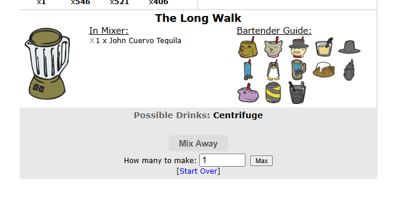
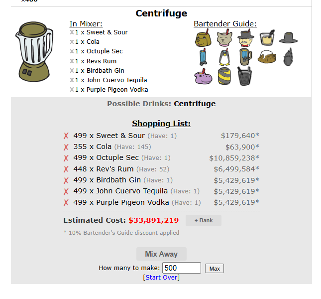

Enhance the Bartender's Guide by dynamically tracking possible drinks and calculating required shopping lists.
The Mixer Helper constantly scans the ingredients you have placed into your virtual mixer and cross-references them against all of your unlocked recipes in the Bartender's Guide. It outputs a helpful Possible Drinks text panel directly above the "Mix Away" button so you know exactly what you can make without having to trial-and-error.

The Mixer showing the "Possible Drinks" text panel above the Mix Away button.
If you click on an unlocked drink icon in your Bartender's Guide that is greyed out (meaning you are missing ingredients), the Helper will instantly generate a Shopping List! This list breaks down exactly what you are missing, tracks what you already have, and provides the estimated dollar cost to purchase the missing ingredients from the Liquor Store.

The Mixer showing the "Shopping List" cost table after clicking a missing drink recipe.